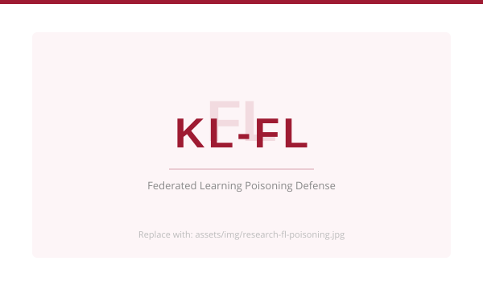
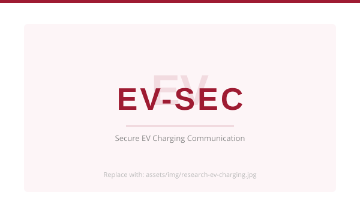
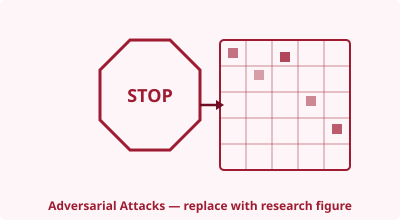
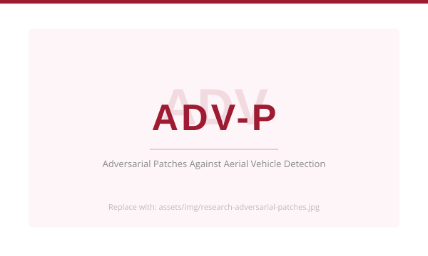
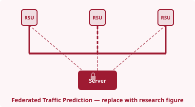
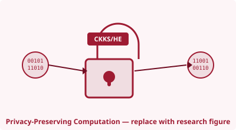

About Me
Muhammad Jahanzeb Khan
I am a Ph.D. candidate in Computer Science at The University of Alabama, advised by Dr. Ahmad Alsharif. My research studies how machine learning systems in connected and automated vehicles fail under attack, and how to defend them. My dissertation, Adversarial Threats and Defenses Across Trust Boundaries in Connected and Automated Vehicles, covers adversarial attacks on traffic sign recognition, detection of poisoning in federated learning, and secure communication for electric vehicle charging.
Before my Ph.D., I worked for five years as a software engineer in backend development, DevOps, and data engineering, including leading a cross-functional team. I hold an M.S. in Computer Science from the University of Nevada, Reno, an M.S. in Software Engineering from Shanghai Jiao Tong University, and a B.S. in Computer Science from NFC Institute of Engineering and Technology. I have taught undergraduate courses and mentored undergraduate researchers in NSF REU programs for four summers.
I will complete my Ph.D. in Spring 2027.
Research Interests
- Adversarial machine learning
- Security and robustness of federated learning
- Privacy-preserving AI and encrypted computation
- Applied cryptography and secure communication for connected vehicles and EV charging
- Security of LLM-based systems and agents
- Trustworthy AI for cyber-physical systems
News
- 2026: Paper on KL-divergence poisoning detection for vehicular federated learning accepted at IEEE ITSC 2026 and shortlisted for the Best Paper Award.
- 2026: Demo on certificateless, non-interactive key establishment for secure EV charging presented at USENIX VehicleSec 2026, supported by a University of Alabama Graduate School Travel Grant.
- 2026: Paper on query-free adversarial malware generation with conditional diffusion at IEEE SATC 2026.
- 2026: Mentored an NSF REU project on adversarial patches against drone-based vehicle detection.
- 2024: Joined The University of Alabama as a Ph.D. student; completed M.S. in Computer Science at the University of Nevada, Reno.
Biography
Education
Ph.D., Computer Science
May 2024 to Spring 2027 (expected)The University of Alabama, Tuscaloosa, AL
Advisor: Dr. Ahmad Alsharif
Proposal defended; admitted to candidacy.
M.S., Computer Science
Jan 2022 to May 2024University of Nevada, Reno, NV
M.S., Software Engineering
Sep 2017 to Dec 2019Shanghai Jiao Tong University, Shanghai, China
Chinese Government Scholarship (CSC)
B.S., Computer Science
Oct 2012 to Aug 2016NFC Institute of Engineering and Technology, Multan, Pakistan
Academic Excellence Award (2015)
Research Experience
Graduate Research Assistant
May 2024 to PresentThe University of Alabama
Security of machine learning for connected vehicles; secure EV charging communication; mentoring NSF REU students.
Graduate Research Assistant
Jan 2022 to May 2024University of Nevada, Reno
Federated learning, privacy-preserving machine learning, and encrypted computation; supported by NSF funding.
Industry Experience
Backend Developer and Team Lead
Jan 2021 to Dec 2021Pixarsart Studios (Plano, TX) / Lahore, PK
Led application development, REST API design, and deployment; led a cross-functional team spanning Android, mobile, frontend, and database engineering. Projects: DrivePoints, Avosplay, FlushApp.
Backend and DevOps Engineer
Jan 2020 to Jan 2021Meecube, Shanghai, China
SafeRoutes trucking fleet platform. Flask microservices, ETL pipelines with Apache Airflow, Jenkins CI/CD. Maintained a fork of open-source YApi API management platform.
Junior Data Scientist
Sep 2019 to Jan 2020Block Dynamics, Shanghai, China
Bitcoin and Ethereum transaction analysis for anti-money-laundering and anomaly classification.
Earlier Roles (2016 to 2019)
Java Intern at KSJ Cloud; .NET Intern at Wicresoft; Associate Software Engineer at TSCreators.
Research
Selected research projects. Full list on Google Scholar.

Poisoning Defense for Vehicular Federated Learning
Problem: In federated learning across vehicles, a few malicious clients can target safety-critical traffic sign classes. Common gradient filters missed this targeted attack.
Approach: Designed a server-side defense that compares each client's predictions on a small probe set with symmetric KL divergence. Evaluated with MobileNetV2 on GTSRB, 10 clients, non-IID (Dirichlet) data, benchmarked against cosine similarity, MAD, Wasserstein, and Mahalanobis defenses.
Status: IEEE ITSC 2026, Best Paper Award shortlist. A journal extension to stronger and adaptive attackers is in preparation.

Secure EV Charging Communication
Problem: The ISO 15118 charging handshake exposed a key in plaintext.
Approach: Implemented and validated certificateless, non-interactive key establishment based on identity-based cryptography on real charging hardware (QCA7000 powerline communication modems).
Status: USENIX VehicleSec 2026 demo. A full paper on a plug-and-charge relay defense is in preparation.

Adversarial Attacks on Vision and Security Models
Evasion attacks on traffic sign recognition and on network traffic classifiers. Comparison of GAN and conditional denoising diffusion models for query-free adversarial malware generation (IEEE SATC 2026, third author).

Adversarial Patches Against Aerial Vehicle Detection
An undergraduate NSF REU project mentored and led: universal adversarial patches on car rooftops that hide vehicles from YOLO-based detection in aerial drone imagery (VisDrone), with segmentation masks keeping patches physically placeable. Co-mentored with Dr. Alsharif.

Privacy-Preserving Federated Traffic Prediction
Privacy-preserving federated learning for traffic flow prediction across roadside units, using multi-client functional encryption secure under DDH, with robust aggregation, gradient filtering, and quantization, under a semi-honest traffic management center and malicious roadside units.

Privacy-Preserving Computation
Encrypted inference on edge devices with CKKS homomorphic encryption (IEEE ICWS 2024); encrypted search over large image matrices with precision-preserving encryption (TechRxiv 2024); privacy-enhanced remote sensing image restoration with federated learning (IEEE ISDFS 2024).
Publications
Full list on Google Scholar.
Journal Articles
- Efficient and Privacy-Preserving ConvLSTM-based Detection of Electricity Theft Cyber-Attacks in Smart Grids. IEEE Access, 2024. Second Author.
Conference and Symposium Papers
- Mitigating Targeted Poisoning in Vehicular Federated Traffic Sign Classification via KL-Divergence Detection. IEEE 29th International Conference on Intelligent Transportation Systems (ITSC), 2026. First Author. Best Paper Award Shortlist
- Demo: Certificateless and Non-Interactive Key Establishment for Secure CCS EV Charging. 4th USENIX Symposium on Vehicle Security and Privacy (VehicleSec), 2026. First Author.
- Query-Free Adversarial Malware Generation Using Conditional Denoising Diffusion. IEEE International Conference on Secure and Trustworthy Computing (SATC), 2026. Third Author.
- Model-Decoupled Federated Learning: Exploring Database Adaptability and Neural Architectural Dynamics in Federated Learning. 2024. First Author.
- Privacy-Preserving Artificial Intelligence on Edge Devices: A Homomorphic Encryption Approach. 31st IEEE International Conference on Web Services (ICWS), 2024. First Author.
- Privacy-Enhanced Image Restoration in Remote Sensing via Federated Learning. 12th IEEE International Symposium on Digital Forensics and Security (ISDFS), 2024. First Author.
- Exploring the Efficacy of Data-Decoupled Federated Learning for Image Classification and Medical Imaging Analysis. FL4Data-Mining Workshop, ACM SIGKDD, 2023. First Author.
- Data Provenance Based System for Classification and Linear Regression in Distributed Machine Learning. SATE Conference Proceedings, 2019. First Author.
- Object Detection Boosting Using Object Attributes in Detect and Describe Framework. IEEE 31st International Conference on Tools with Artificial Intelligence (ICTAI), 2019. First Author.
Preprints
- Advancing Privacy in Data Mining: Seamless Homomorphic Searches and Precision-Preserving Encryption. TechRxiv, 2024. First Author.
Manuscripts in Preparation
- Manuscripts in preparation (3): titles confidential.
Teaching and Mentoring
Teaching
Database Management Systems (CS 457/657), Fall 2023 to Spring 2024. Lab sessions, assignment support, grading, and office hours.
Testing and DevOps (CS 333), January 2022.
Sep 2016 to Aug 2017. Database Management Systems and Programming (undergraduate).
Oct 2016 to May 2017. Taught web development to underprivileged learners aged 14 to 54 under a Government of Punjab contract.
Teaching Interests
Programming, Database Systems, Software Engineering, Web Development, Artificial Intelligence, Machine Learning, Data Science, Cybersecurity, Information Technology; new courses in Security of Machine Learning and AI for Connected Systems.
NSF REU Research Mentoring (2023 to 2026)
Honors and Service
- Best Paper Award shortlist, IEEE ITSC 2026
- Graduate School Travel Grant, The University of Alabama (USENIX VehicleSec 2026), 2026
- 5th place, Capture the Flag challenge, UNR cybersecurity conference, 2023
- Chinese Government Scholarship (CSC), 2017
- Academic Excellence Award, NFC Institute of Engineering and Technology, 2015
- Reviewer: China Communications, ACM Transactions on Knowledge Discovery from Data (TKDD), IEEE ISDFS 2027, and other ACM and IEEE venues